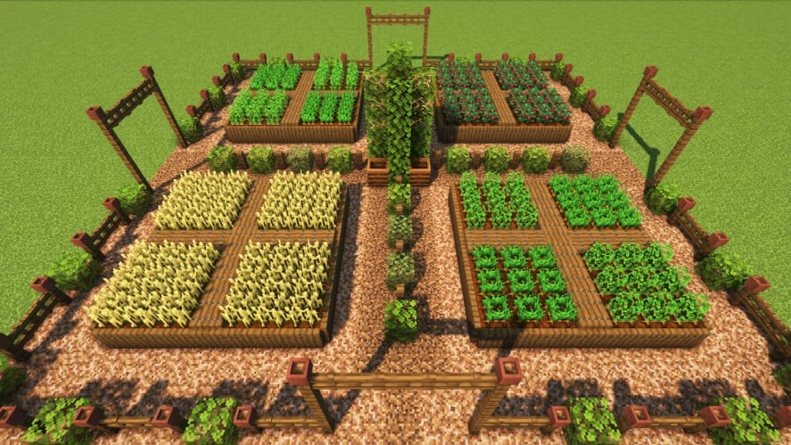

I will create a community farming are. this will not be to replace shops, but will promote people to create farms for basic nessisecitys. Things such as food, and expierence. This will be designed to discourage poverty, and then nobody will need to go hungry because they cant afford food and all the animals within 100 blocks have been killed.
